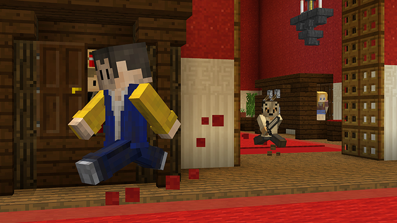

Minigame Murder Mistery
Um pouco sobre Murder Mistery:
O jogo consistem em uma dinâmica onde há um detetetive, um assasino e
os restantes dos players são inocentes. O jogo funciona da seguinte forma, o detetetive
irá receber um arco com 8 flechas e terá como função descobrir quem é o assasino, caso ele mate
a pessoa errada ele irá ser punido sem poder atirar por 15 segundos, já o assasino
irá receber uma faca, sua função será eliminar todos os players do jogo, os demais
jogadores poderam coletar minérios de ferro para fazerem um arco e flechas, poderam auixiliar
o detetive em sua missão de encontrar o assasino, porém caso matem a pessoa errada
sua punição támbem será a morte.

Voltar pra a - Home